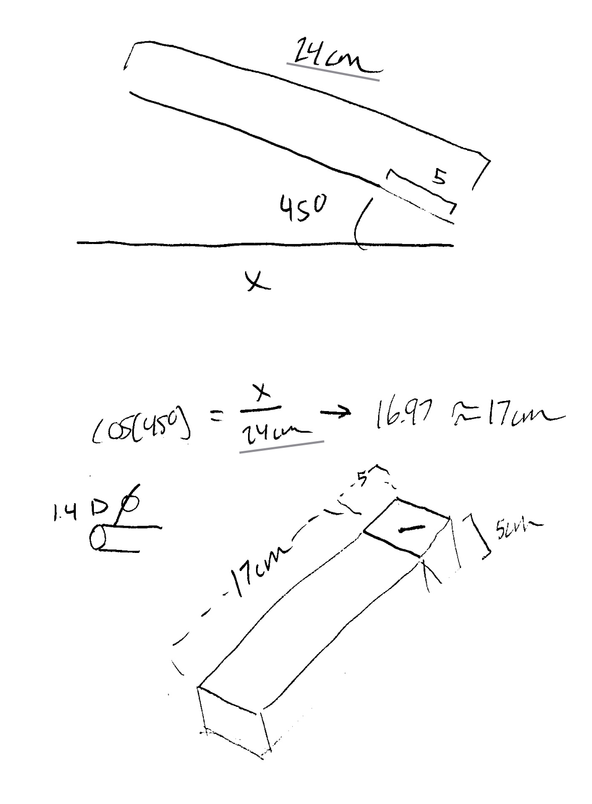

This is a Simple Incense Stick holder, designed by Adam Ingah
Download
This simple stick holder was designed in Fusion 360 and fabricated using 3D printed materials.
I was heavily inspired by the washington monument and the reflecting pool beneath it, and I
wanted a single solid piece so that it can be fabricated very easily and not need supports.

The final version you are seeing is the sixth iteration. A lot of the work I had to do was
regarding tolerances of the 3D printing. Also, I needed to brush up on my high school
geometry. In some of my preliminary napkin sketches you can see some kind of trigonometry
